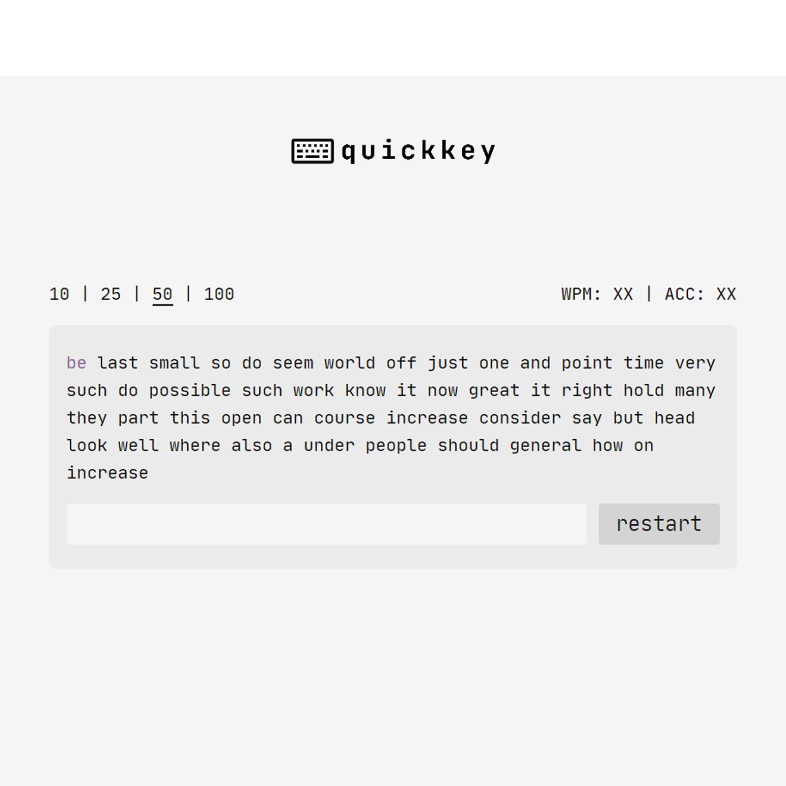

|
Ben Datsko I am an undergraduate at the University of Michigan studying Computer Science. I am currently a Research Assistant in the Michigan Integrated Circuits Lab's Flynn Group and a Model-Based Design Engineering Intern at Otis. |
|
ResearchI frequently work within the realms of mixed-signal integrated circuits, edge computing, PCB design, and embedded software. Some projects haven't been published on for a long while but are still under development. Representative titles are marked with a star *. |
Projects |
|
|
AiApply: Create Tailored Resumes With Generative AI
Help tailor your resume to job postings provided a master resume! Features a React front-end, Flask endpoints for LaTeX-to-pdf conversion, OAuth-based authentication, and uses Firebase for cloud storage. |

|
University of Michigan Solar Car Team Race Simulator Dashboard and Microservice
A web platform for the U-M Solar Car Team's race physics and aerodynamics simulators. Features a React front-end, a MongoDB collection for simulation data, and a Flask app containing an API with interfaces to each simulator. |

|
Upper-Atmospheric Weather Balloon Payload System
A high-altitude Arduino-based payload system (components: weather balloon, case, and PCB) equipped with a TMP36 temperature sensor, thermistor, pressure sensor, humidity sensor, accelerometer, UV sensor, GPS, OpenLog, and MicroSD writer for recording and analyzing upper-atmospheric conditions. |
|

|
Quickkey: A Minimalistic Typing Test
A simplistic typing speed test. Speed measured in words per minute. Developed using Typescript, React, and NodeJS. |

|
PathVis: A Pathfinding Algorithm Visualizer
A visualizer for search algorithms including Dijkstra's, A-Star Search, Greedy BFS, and Greedy DFS written in vanilla JavaScript. Deployed to Netlify. |
|
|
TempoTimer: Race Pace Android App for Swimmers
Visualizing success is popular in sports psychology. This app acts as metronome for swimmers' strokes and provides an auditory simulation of swimmers' races based on inputted splits which can be played during visualization to increase mental confidence. Developed in Java using the Android SDK. Available on the Google Play Store. |

|
Witchcraft and Wizardry - The Floo Network (RPG)
An RPG recreation of the Wizarding World of Harry Potter (with some semblance of a plot-line) within Minecraft. Features mini-games, quests, currency system, and much more. |
|
|
CubeRun - Unity Experiment
An endless runner game. Our game's protagonist, the player (i.e. a red cube), happens to be very good at dodging sporadically spawning rectangular prisms. Developed using the Unity 3D Game Kit and C#. Adobe Audition and Adobe Photoshop used for creating game assets. |
|
|
Annoying Ghosts - Minecraft Realms (Adventure)
An adventure game made in collaboration with Mojang Studios and Microsoft for the Minecraft Java Realms platform. Players act as ghost hunters and remove mischievous ghosts from a haunted manor while guided by their supervisor. Has accrued over 10 million YouTube views and over 50K downloads since publication. |
|
|